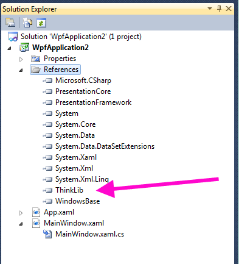

Getting Started with ThinkLib¶
If you’d prefer a video ...
See this demonstration of downloading and installing ThinkLib, and building your first turtle application at http://www.ict.ru.ac.za/resources/thinksharply/videos/TessAndAlex.avi
Download the file http://www.ict.ru.ac.za/Resources/ThinkSharply/downloads/ThinkLib.zip and unzip it into a convenient place on your hard disk.
(If you have a folder for your ThinkSharply projects, this would be a good place). It should unzip as two files: ThinkLib.dll (the module itself) and ThinkLib.XML (the documentation that allows IntelliSense to work nicely with this module).
Start a new project in Visual Studio. (A WPF application).
In the Solution Explorer, right click on your project’s References and choose Add Reference.
Chose the Browse tab. Browse to the folder where you saved ThinkLib.dll. Select it and click OK. You’ll find it now appears under the references for your project - similar to what is shown in the diagram here. You can collapse the References detail.
Open the file MainWindow.xaml.cs (the code-behind MainWindow.xaml), and add this “using” statement below those that are already there:
1
using ThinkLib;
That’s it. You’re ready to start with the first example in the Chapter Hello, little turtles!.
If you want to use ThinkLib in any new project you need to remember to add a reference to it.